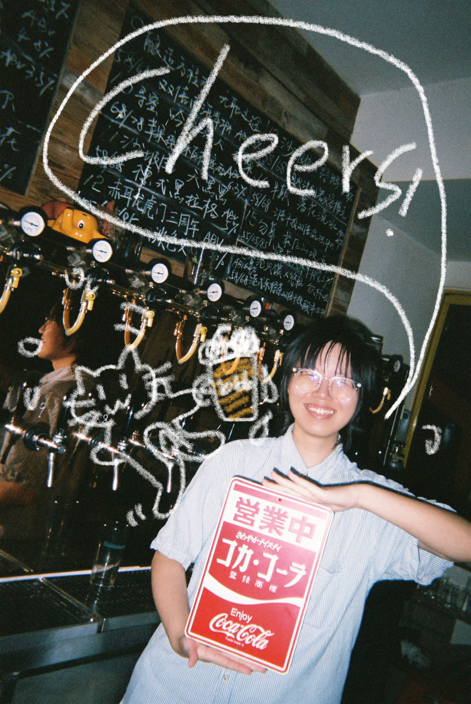
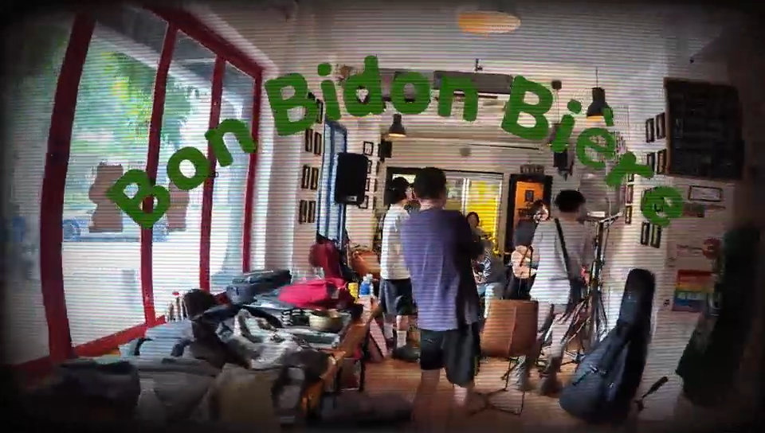
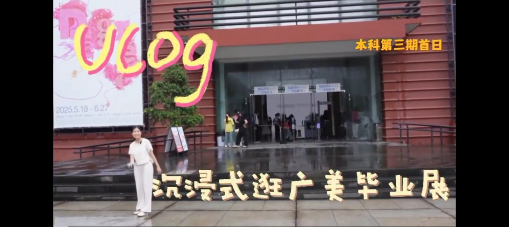
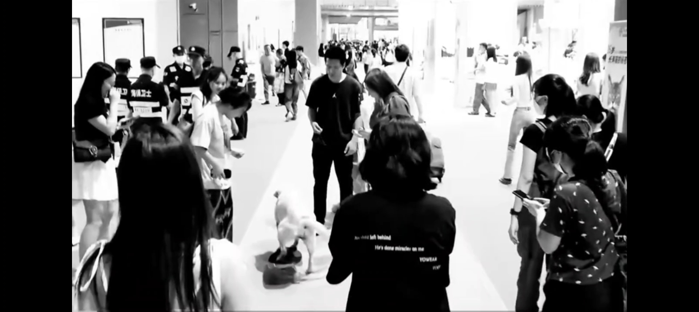

很高兴遇见你！进来看看吧~~
年龄：22Y
本科院校：广东外语外贸大学 新闻学
邮箱：1379417532@qq.com
具体内容...
用镜头捕捉光影，用文字记录思考。微信公众号：好朋友鳟鱼 小红书：newcowcow/newnewnews
动态的视界，记录更多维度的创意表达。 视频号：wownocow
关于食物与人的情感、日常生活的小短片。

打工的酒馆正式开业三周年！打折畅饮、乐队live、DJ现场打碟......快来看看吧！

这是一条轻松的新闻vlog，带大家云逛展，并了解展品背后的故事吧！

情绪化的vlog，以音乐为基地，有意地在情感上制造了转折。
描述内容...